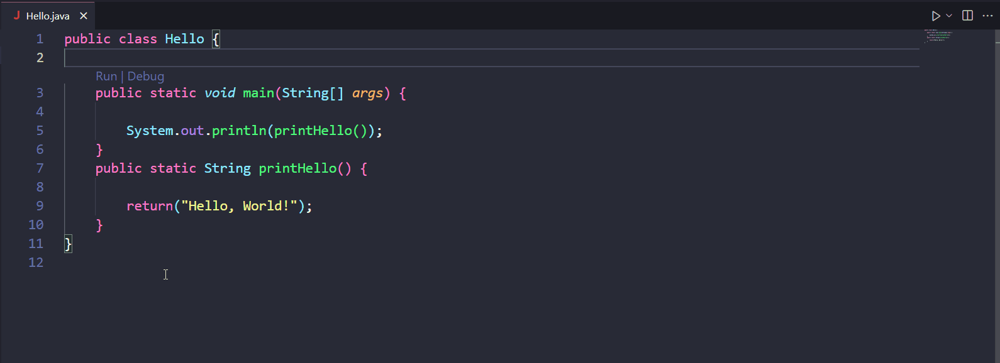

Code Separator
This project came into existence due to a small personal need when writing software, regardless of the language. I used to write comments like this: //-------------------------...
to logically and neatly separate sections of the code. After a while i got tired of it as it was inconsistent across the different screen sizes of my desktop and my laptop due to different word wrapping lengths. I ultimately decided to develop a simple VSCode extension to draw a separating line for the whole length of the text editor given a specific comment pattern. This was also an opportunity to explore this world a bit, as i often wondered how one would develop such things.
The extension itself is written in Typescript and is extremely simple and minimal to almost comical levels. It simply draws a line anytime it encounters the "trigger" pattern in the text file currently open, which can be configured in the settings on a per-language basis. Additionally, the color, shape and thickness of the line and the trigger pattern itself are also fully customizable on a per-language basis.

A potential interesting improvement to this extension would be to rely on a separate file, perhaps under the .vscode directory, that lists all the locations of the separators for all files in the project. This way the actual files themselves won't have to be touched, allowing easier integration with already existing codebases without having to modify a million files. This functionality, however, is currently hypothetical and up in the air and, if i decide to implement it, it won't come any time soon since it's quite low priority for now.
Interfacing with the VSCode APIs, however, wasn't super easy as finding things on the documentation wasn't an immediate thing (especially if you have no idea what you are doing...). I ended up dissecting and base a good chunk of the work from an example i found on the VSCode developer page. In addition to this, releasing the extension in the marketplace to make it easily accessible to others was quite the ordeal, as it required a lot of setup involving creating an Azure account, personal access tokens and a marketplace publisher account.
Code Separator is available on the marketplace or you can view the source code Git repo.